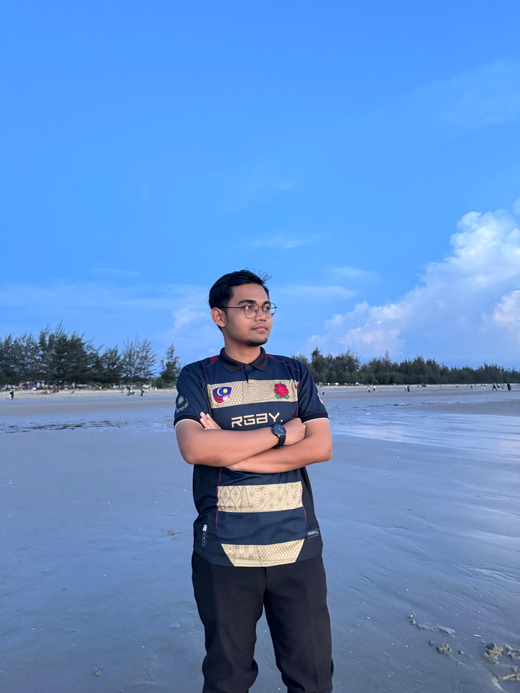

MUHAMMAD HAZIQ ZIKRI / MALAYSIA
Hello,
I’m Haziq.
A Network Computing student
at Universiti Malaysia Sarawak.
I’m interested in how software and networks work together. This is where I share my portfolio.

01 / SELECTED WORK
Projects & explorations.
Three academic projects, each exploring
a different part of computing.
3 projects
No matching projects. Try another search or select All work.
02 / ABOUT ME
A bit about
my background.
Software development.
Networking.
Interface design.
I’m Muhammad Haziq Zikri, studying Computer Science in Network Computing at Universiti Malaysia Sarawak.
I enjoy breaking a problem into smaller pieces, understanding how they connect, and building something useful from them. My work explores software development, networking, and interface design.
My background includes C, C++, Java, Python and JavaScript, alongside networking, operating systems.
- University
- Universiti Malaysia Sarawak (UNIMAS)
- Area of study
- Computer Science/Network Computing
- Based in
- Malaysia
03 / SAY HELLO
Have something
in mind?
I’m happy to talk about my projects and what we could build. You can prepare a message here, then share it through the channel where you found my portfolio.
haziqkri010812@gmail.com